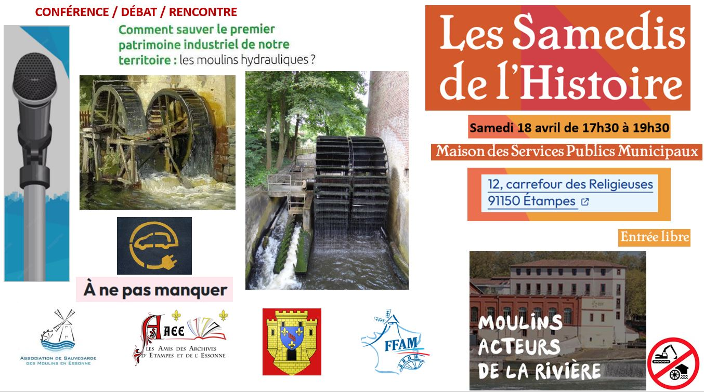

Samedi 18 avril · 17h30 – 19h30
Comment sauver le premier patrimoine industriel de notre territoire : les moulins hydrauliques ?
Dans le cadre du cycle « Les Samedis de l'Histoire » — conférence / débat / rencontre.
Maison des Services Publics Municipaux Marcel-Lafouasse, 12 carrefour des Religieuses, 91150 Étampes.
Entrée libre.
